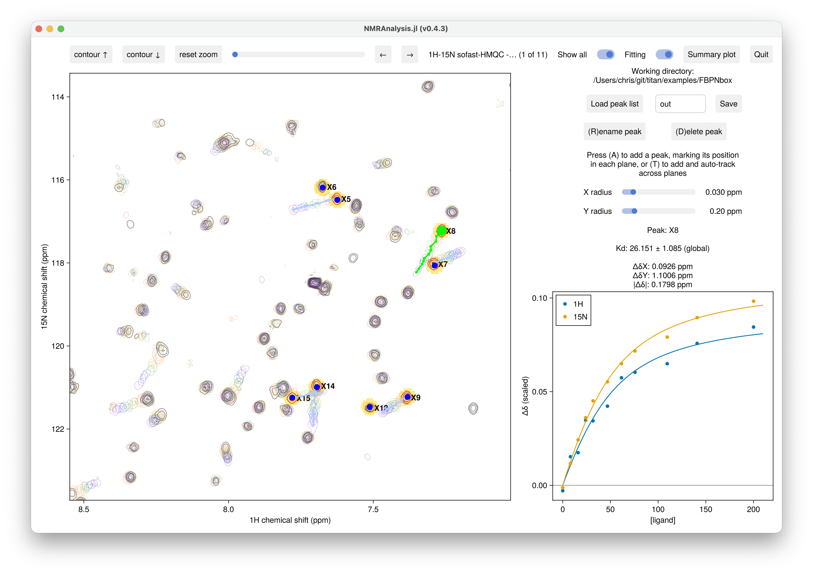

Titrations
titration2d analyses a 2D titration series, fitting a global binding isotherm to the chemical-shift perturbations. It is a peak-tracking analysis: each residue's peak walks along a binding trajectory across the planes, and the fit recovers a single dissociation constant $K_\text{d}$ (shared by all residues) together with the free and bound chemical shifts of every residue in each dimension.
using NMRAnalysis
files = [
"/Users/chris/git/titan/examples/FBPNbox/1"
"/Users/chris/git/titan/examples/FBPNbox/2"
"/Users/chris/git/titan/examples/FBPNbox/3"
"/Users/chris/git/titan/examples/FBPNbox/4"
"/Users/chris/git/titan/examples/FBPNbox/5"
"/Users/chris/git/titan/examples/FBPNbox/6"
"/Users/chris/git/titan/examples/FBPNbox/7"
"/Users/chris/git/titan/examples/FBPNbox/8"
"/Users/chris/git/titan/examples/FBPNbox/9"
"/Users/chris/git/titan/examples/FBPNbox/10"
"/Users/chris/git/titan/examples/FBPNbox/11"
]
ligand_concs = [0, 8.13, 16.14, 24.01, 31.76, 46.89, 61.56, 75.79, 109.53, 140.89, 200.06]
protein_concs = [41, 40.67, 40.34, 40.02, 39.7, 39.08, 38.48, 37.89, 36.51, 35.22, 32.8]
# Ligand concentrations only (hyperbolic, ligand ≈ free):
titration2d(files, L0=ligand_concs)
# With protein concentrations — exact 1:1 equation, accounts for dilution:
titration2d(files, L0=ligand_concs, P0=protein_concs)
Arguments
inputfilenames: a single pseudo-3D dataset, or a vector of 2D spectra (one per plane).L0: total ligand concentration in each plane (one value per plane).P0: total protein concentration in each plane (one value per plane), or omitted. When supplied, the exact 1:1 binding equation is used, which accounts for the protein concentration and any dilution during the titration.weights:(wx, wy), the per-dimension weighting used to combine the x and y shift changes into the single|Δδ|reported in the summary plot (see Combined CSP). This affects only the combined|Δδ|summary; the per-dimension panels and theKdfit do not use it. The default(1.0, 0.14)assumes ¹H on the x (F1) axis and ¹⁵N on the y (F2) axis.
Use whatever concentration units you like for L0 and P0 (µM, mM, …), as long as both are in the same units. The fitted $K_\text{d}$ is reported in those same units.
Tracking peaks
Peaks are added and positioned exactly as in peak tracking:
- (T) — add and track drops a peak and follows the intensity maximum across the planes automatically. Best for well-resolved titrations.
- (A) — add walks through the planes so you mark the peak in each one by hand, for crowded regions.
- Drag a peak's handle to correct its position in the current plane; (D) deletes and (R) renames the selected peak.
Use assigned peak labels containing a residue number (e.g. L23) so the summary plot can place each point against residue number.
The binding model
Binding is treated as a single-site (1:1) interaction $P + L \rightleftharpoons PL$ with dissociation constant
\[K_\text{d} = \frac{[P][L]}{[PL]}.\]
In each plane the observed shift is a population-weighted average of the free and bound states, so the perturbation relative to the free shift is
\[\Delta\delta = f \,(\delta_\text{bound} - \delta_\text{free}),\]
where $f = [PL]/P_\text{T}$ is the fraction of protein bound and $P_\text{T}$ is the total protein concentration. How $f$ is computed depends on whether protein concentrations are provided.
With ligand concentrations only (L0), the free ligand is approximated by the total ligand ($[L] \approx L_\text{T}$), giving the hyperbolic isotherm
\[f = \frac{L_\text{T}}{K_\text{d} + L_\text{T}}.\]
With protein concentrations (L0 and P0), the exact 1:1 quadratic is solved for each plane (no free-ligand approximation), which accounts for ligand depletion and for dilution of the protein as titrant is added:
\[[PL] = \tfrac{1}{2}\left(P_\text{T} + L_\text{T} + K_\text{d} - \sqrt{(P_\text{T} + L_\text{T} + K_\text{d})^2 - 4\,P_\text{T} L_\text{T}}\right), \qquad f = \frac{[PL]}{P_\text{T}}.\]
The two forms agree in the $P_\text{T} \to 0$ limit.
The fit has a single nonlinear parameter — the shared $K_\text{d}$. For any trial $K_\text{d}$ the per-residue, per-dimension free and bound shifts ($\delta_\text{free}$, $\delta_\text{bound}$) follow from a weighted linear regression of the fitted positions on the bound fraction $f$ (variable projection), with weights taken from the per-plane position uncertainties. $K_\text{d}$ is then optimised over this 1-D problem, and its uncertainty is obtained by the delta method.
Results
- The per-residue panel shows ΔδX and ΔδN against ligand concentration (referenced to the fitted $\delta_\text{free}$), with the fitted binding curve overlaid.
- The global $K_\text{d}$ (± uncertainty) is reported in the results panel, in the same concentration units as
L0/P0. - Save to folder writes
results.csvwith each peak's per-plane positions, linewidths and amplitudes, plus the derived $\delta_\text{free}$/$\delta_\text{bound}$ shifts and the global $K_\text{d}$. Load peak list restores them. - The summary plot shows ΔδX, ΔδN and the combined
|Δδ|(saturation CSP = $\delta_\text{bound} - \delta_\text{free}$) against residue number.
Combined CSP
The summary plot's combined chemical-shift perturbation merges the saturation shift changes in the two dimensions into a single per-residue value, using the weighted Euclidean combination of Williamson (2013):
\[|\Delta\delta| = \sqrt{(w_x\,\Delta\delta_x)^2 + (w_y\,\Delta\delta_y)^2},\]
where $\Delta\delta_x$ and $\Delta\delta_y$ are the bound − free shift changes in each dimension and $(w_x, w_y)$ are set by the weights argument. The weights put the two nuclei on a comparable scale: the much larger ¹⁵N shift range would otherwise dominate a ¹H change of the same nominal size. The default (1.0, 0.14) is appropriate for a ¹H/¹⁵N spectrum; for ¹H/¹³C use roughly (1.0, 0.25). The weighting is applied only here — the per-dimension ΔδX/ΔδN panels and the global $K_\text{d}$ fit are independent of it.